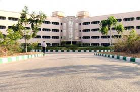

My Second Home
(Click on the title for more details.)
This has been my home for 15 years. The memories created here are really invaluable. My miss this place alot. Every desk of the school had a different story. Time passed like nothing, difficult to think how 15 years went like nothing. Now, 15 years seems like a too short time. Those days were just too brilliant, why have I grown up. Those canteen gossips, small magic tricks, our favourite Hand Cricket, paper ball cricket,eating secretly at the last bench, the happiness we found in those seem to have lost in some unknown world. I was really too much emotionally attached with my school.
Matric : 10 CGPA
+2 : 92.8%
Place that thought me the most...
(Click on the title for more details.)
Iquest has been the place that has taught me alot in no time. Teaching doesn't only refer to the academics but the lessons of life I learned in Iquest will carry with me for my entire life. Iquest has been the place which scared me the most to a place where I always loved to be. Such was it that after sometime, I loved to be at iquest instead of home. Iquest gave me confidence on my abilities and the credit for this goes to just one person Mr. Dheeraj Aggarwal. Dheeraj sir was, sorry "is" always like a friend more than a teacher. The amount of concern Dheeraj Sir showed for my studies was alot higher than even what I had. Love you sir. And the person I love being taught the most was Rohit Sir. The reason for this can be somewhat that Maths was my favourite subject. Rohit sir is always like a friend. Literally, I hate studying but credit goes to both Rohit sir and Dheeraj sir which made me enjoy studying. Love you Sir. Miss someone like you alot here. Meet you soon.
JEE MAIN SCORE : 282
JEE MAIN RANK : 755
JEE ADVANCE RANK : 1558
....Place where my dreams have finally landed

(Click on the title for more details.)
So here am I, in the beginning of a new journey. New memories to create, great moments to cherish and lots of things to learn. The section may not contain alot of stuff but it will increase as the journey goes on. This 4 year journey will teach me alot and give me alot of new experiences. The experience of life will be hopefully the best in the coming 4 years. So that's all I have to say about IIIT at this point but alot of stuff will be added in the future.
(Stay tune for the updates. As I don't have any at the moment.)